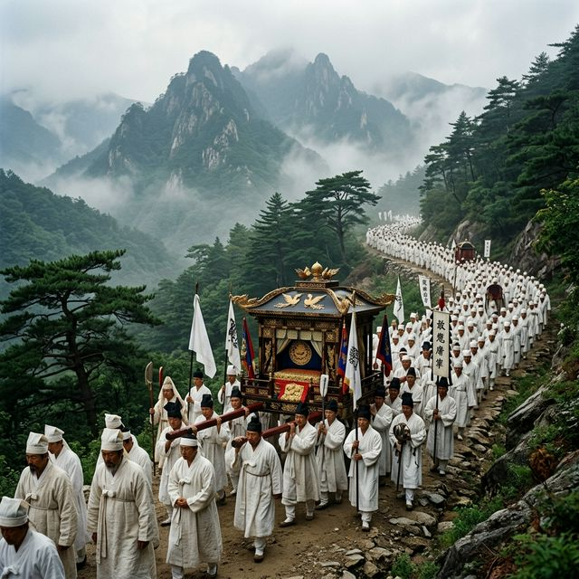
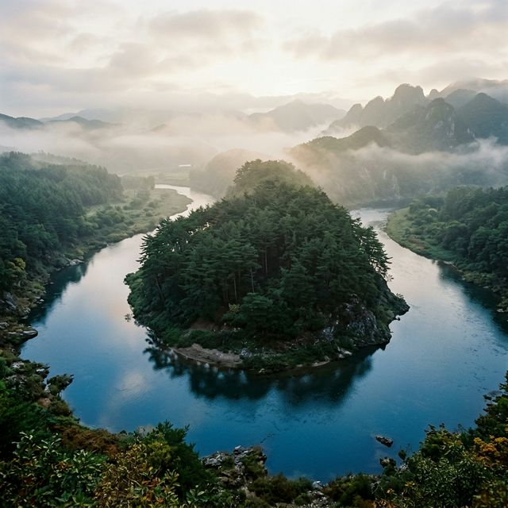
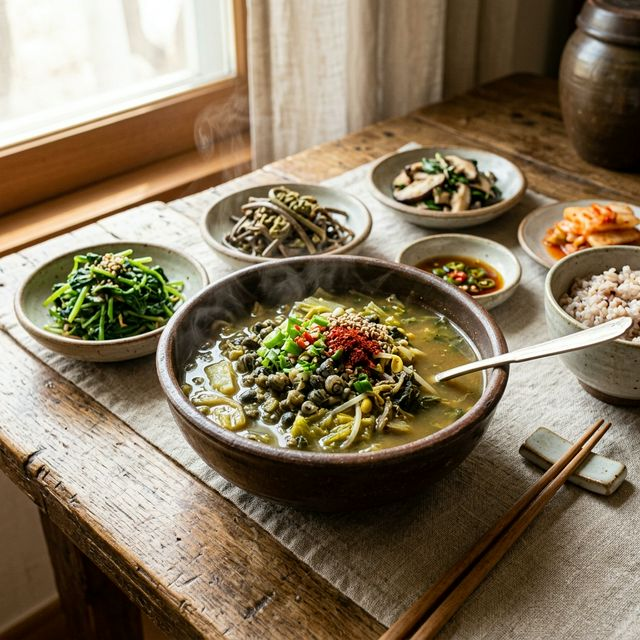

영월 단종문화제 2026 일정 주차 및 장릉 국장 재현 관람 팁 총정리
강원도 영월의 맑은 공기와 역사의 숨결이 만나는 시간, 제59회 단종문화제 2026이 다가왔습니다. 조선 제6대 왕 단종의 애달픈 넋을 기리고 충신들의 숭고한 정신을
계승하는 이 축제는, 단순한 행사를 넘어 유네스코 세계문화유산인 장릉과 청령포를 배경으로 펼쳐지는 장엄한 서사시입니다. 2026년 4월 24일부터 26일까지 3일간 영월 전역을 물들일 이번 축제의 핵심
일정과 주차 명당, 그리고 단종 국장 재현 퍼레이드의 감동을 제대로 느끼는 방법을 지금부터 상세히 안내해 드립니다.
1. 조선의 슬픈 역사, 단종과 영월의 인연
영월은 단종에게 있어 마지막 안식처이자 거대한 무덤과도 같은 곳입니다. 어린 나이에 숙부에게 왕위를 빼앗기고 머나먼 이곳 강원도 산골로 유배를 왔던 단종의 이야기는 500년이 지난 지금도 영월 사람들의
마음속에 깊이 박혀 있습니다. 단종문화제는 이러한 비극적인 역사를 슬픔으로만 끝내지 않고, 한 왕을 향한 백성들의 충성심과 사랑을 문화 예술로 승화시킨 축제입니다.
영월의 어느 골목을 거닐어도 단종의 자취를 느낄 수 있는 것은 그만큼 이 지역이 단종이라는 인물과 깊은 유대감을 형성하고 있기 때문입니다. 축제 기간 동안 영월군민들은 스스로 상주가 되어 단종의 마지막 길을
배웅하는 마음으로 국장을 재현합니다. 이러한 진정성이 깃든 행사는 방문객들에게 단순한 볼거리를 넘어 역사에 대한 깊은 성찰과 감동을 선사합니다. 장릉의 소나무들이 한결같이 단종이 잠든 정자각 쪽으로 굽어
있다는 신비로운 이야기처럼, 영월 전체가 하나의 거대한 제례 공간이 되는 순간을 만끽해 보시기 바랍니다.

장엄하게 펼쳐지는 단종 국장 재현 행렬의 모습 - AI 제작 이미지
2. 2026 제59회 단종문화제 상세 일정 안내
올해 축제는 2026년 4월 24일(금)부터 4월 26일(일)까지 영월읍 동강 둔치와 장릉 일대에서 진행됩니다. 첫날인 24일에는 축제의 시작을 알리는 정순왕후 선발대회와
개막식, 그리고 동강의 밤하늘을 수놓는 화려한 드론 라이트 쇼가 예정되어 있습니다. 평일임에도 불구하고 개막식의 열기와 영월이 자랑하는 야경은 놓칠 수 없는 포인트입니다.
둘째 날인 25일 토요일은 축제의 하이라이트인 단종 국장 재현 퍼레이드가 펼쳐집니다. 수백 명의 인원이 참여하는 이 거대한 행렬은 영월 시내를 가로질러 장릉까지 이동하며 조선
시대의 의례를 완벽하게 고증합니다. 마지막 날인 26일에는 장릉에서 엄숙한 단종 제향이 거행되며, 폐막 콘서트를 끝으로 3일간의 여정이 마무리됩니다. 각 요일별로 메인 무대의 위치가 달라지므로 이동 동선을
미리 파약하는 것이 중요하며, 특히 국장 재현 시에는 시내 교통이 통제되니 유의하셔야 합니다.
3. 축제의 꽃, 단종 국장 재현 퍼레이드 관람 팁
수백 명의 출연진이 흰 도포를 입고 만장을 흔들며 나아가는 국장 행렬은 세계 어디에서도 보기 힘든 독특하고 신비로운 풍경입니다. 이 장엄한 광경을 가장 잘 볼 수 있는 명당은 영월 시내 중심
사거리와 장릉 입구입니다. 행렬이 시내를 지날 때는 관람객들이 길가에 늘어서서 장엄한 소리에 귀를 기울이며, 마치 500년 전의 현장으로 타임슬립 한 것
같은 기분을 느낄 수 있습니다.
퍼레이드는 보통 토요일 오후 1시경에 시작되어 약 2~3시간 동안 진행됩니다. 무거운 상여를 메고 걷는 행렬의 발걸음 속에는 역사의 무게가 담겨 있습니다. 사진 촬영을 원하신다면 행렬이 멈추는 구간인
영월초등학교 인근이나 넓은 시야가 확보되는 동강대교 진입로 쪽을 추천합니다. 전통 음악인 '만가'가 울려 퍼질 때 주변 산천의 정적과 어우러지는 그 분위기는 온몸에 전율을 돋게 할 정도로 압도적입니다. 역사
교과서에서만 보던 조선의 국장이 눈앞에서 생생하게 펼쳐지는 순간을 기록해 보십시오.
4. 4월 24일 밤, 동강을 수놓는 드론 라이트 쇼
영월의 밤은 낮보다 더 아름다울 예정입니다. 24일 밤 동강 둔치 특설무대 하늘 위로 떠오르는 수백 대의 드론은 단종의 영혼과 영월의 미래를 상징하는 화려한 궤적을 그리게 됩니다. 드론 라이트
쇼는 현대적인 기술과 전통적인 서사가 결합된 축제의 별미로, 동강의 강물에 비치는 드론의 불빛이 몽환적인 분위기를 자아냅니다. 가족이나 연인과 함께 강변에 앉아 감상하기에 최고의
프로그램입니다.
전통 축제라고 해서 단순히 제례만 지내는 것이 아니라, 이처럼 최첨단 미디어 아트가 결합되어 누구나 즐길 수 있는 축제로 거듭나고 있습니다. 드론 쇼 전후로 펼쳐지는 개막 공연에는 유명 아티스트들의 무대도
준비되어 있어 축제의 흥을 돋웁니다. 다만, 강원도 영월의 4월 말 밤 기온은 생각보다 쌀쌀할 수 있습니다. 강바람을 막아줄 수 있는 가벼운 경량 패딩이나 담요를 지참하는 것은 영월 여행의 필수 지혜입니다.
밤하늘을 캔버스로 삼아 펼쳐지는 빛의 예술을 놓치지 마세요.
| 행사 요약 |
제59회 단종문화제 2026 |
| 행사 기간 |
2026. 04. 24(금) ~ 04. 26(일) |
| 핵심 키워드 |
단종국장 재현, 칡 줄다리기, 정순왕후 선발, 제향 |
| 주요 장소 |
영월 장릉, 동강 둔치, 청령포 일원 |
5. 단종의 유배지, 고립된 섬 속의 비극 '청령포'
축제장과 멀지 않은 곳에 위치한 청령포는 단종이 실제로 유배 생활을 했던 곳입니다. 삼면이 강물로 둘러싸여 있고 뒤편은 험준한 절벽으로 막혀 있어 배가 없으면 나갈 수 없는 육지
속의 섬입니다. 이곳에는 단종이 거처하던 가옥과 함께 그가 한양을 바라보며 시를 읊었다는 자규루, 그리고 단종의 비참한 처지를 보고 울었다는 소나무 '관음송'이 있습니다. 관음송은 우리나라에서 가장 오래된
소나무 중 하나로 그 당당한 자태가 보는 이를 압도합니다.
청령포로 들어가는 배 위에서 바라보는 강물의 잔잔함은 단종의 격동적인 마음과 대비되어 더욱 처연하게 느껴집니다. 자갈길을 따라 소나무 숲을 걷다 보면 왜 영월이 단종의 땅인지를 온몸으로 실감하게 됩니다. 축제
기간에는 청령포 일대에서도 다양한 소규모 공연과 전시가 이루어지므로, 메인 행사장인 동강 둔치에서 셔틀버스를 타고 꼭 한 번 다녀오시길 권합니다. 자연이 빚어낸 천혜의 절경 속에 숨겨진 역사의 아픔을 마주하는
시간은 영월 여행의 정점입니다.

단종의 아픈 역사가 깃든 유배지 청령포의 고즈넉한 풍경 - AI 제작 이미지
6. 역동적인 민속 행사: 칡 줄다리기와 정순왕후 선발대회
단종문화제는 정적인 제례 행사뿐만 아니라 영월 사람들이 하나가 되는 역동적인 민속 경기들로 가득합니다. 그 중에서도 동강 둔치에서 열리는 칡 줄다리기는 영월의 전통을 상징하는
대표적인 힘겨루기입니다. 거대한 칡넝쿨로 만든 줄을 수백 명의 주민들이 편을 갈라 당기는 모습은 그 자체로 장관입니다. 우승한 팀에게 복이 온다는 믿음 덕분에 열기가 대단하며, 관람객들도 현장의 북소리와 함성
소리에 맞춰 어깨춤을 추게 됩니다.
또한, 단종의 비인 정순왕후를 기리는 정순왕후 선발대회는 단순한 미인대회가 아니라 단종을 향한 지조와 절개를 상징하는 여성을 선발하는 행사입니다. 현대적인 감각으로 재해석된 이
대회는 영월의 여인상을 정립하고 여성들의 문화적 역량을 뽐내는 자리이기도 합니다. 한복의 고운 자태와 참가자들의 재치 있는 답변은 축제장을 찾은 많은 팬들에게 즐거운 구경거리를 제공합니다. 마을 전체가
들썩이는 잔치 분위기를 느끼고 싶다면 동강 둔치의 체험 부스 지역을 적극 탐방해 보세요.
7. 영월 주차 정보 및 교통 통제 미리보기
축제 기간 영월읍내는 많은 인파와 차량으로 매우 혼잡합니다. 특히 토요일 국장 재현 시에는 주요 도로가 폐쇄되므로 주차 전략이 필수적입니다. 가장 추천하는 주차 공간은 덕포리 공공기관 이전 예정
부지에 마련된 대규모 임시 주차장입니다. 이곳은 수천 대의 차량을 수용할 수 있으며, 축제 행사장인 동강 둔치까지 셔틀버스가 5~10분 간격으로 운행되어 가장 편리하게 접근할 수
있습니다.
시내와 가까운 영월초등학교 운동장이나 스포츠파크 주차장도 있지만, 금방 만차될 확률이 높으므로 처음부터 덕포리 주차장으로 향하는 것이 정신 건강에 이롭습니다. 영월역과 터미널 이용객을 위한 시내 셔틀 노선도
운영될 예정이니 대중교통을 이용하는 것도 좋은 선택입니다. 내비게이션에 '영월 축제 임시 주차장'을 검색하거나 현장에 배치된 자원봉사자들의 안내를 따르면 통제 구간을 피해 안전하게 이동할 수 있습니다. 주말
방문 시에는 오전 10시 이전에 영월에 도착하는 계획을 세우시는 것이 여유로운 관람의 핵입니다.
8. 금강산도 식후경, 영월에서 맛보는 별미 '다슬기'
영월 여행에서 빠질 수 없는 즐거움 중 하나는 바로 다슬기 해장국입니다. 동강의 맑은 물에서 자란 다슬기는 타우린이 풍부해 나들이 식사로 제격입니다. 영월역 앞에는 다슬기 전문
식당들이 즐비하며, 축제장 인근 먹거리 장터에서도 신선한 다슬기전과 무침을 맛볼 수 있습니다. 쌉싸름하면서도 시원한 국물 맛은 봄철 입맛을 돋우기에 충분하며, 함께 나오는 산나물 반찬들과의 조화도
일품입니다.
만약 좀 더 든든한 식사를 원하신다면 영월 보리밥이나 곤드레밥도 좋은 선택입니다. 강원도의 척박한 땅에서 자라난 나물들이 주는 투박한 맛은 단종의
소박한 삶을 떠올리게 합니다. 영월 서부시장에서는 닭강정이나 전병 같은 간식거리도 풍부하니 정겨운 시장 투어도 함께 즐겨보세요. 축제장 내 푸드트럭 zone에서도 현대적인 감각의 스트릿 푸드들이 준비되어 있어
연령대와 상관없이 다양한 미식 경험을 할 수 있습니다. 맑은 공기와 맛있는 음식이 있는 영월은 오감을 만족시키는 완벽한 여행지입니다.

영월의 대표 별미인 시원한 다슬기 해장국과 건강한 산나물 반찬 - AI 제작 이미지
9. 단종문화제 2026 알찬 관람 코스 제안
당일치기로 방문하신다면 다음 코스를 추천합니다: 오전 10시 장릉 방문 및 단종 제찰 감상 -> 오후 1시 영월 시내 국장 행렬 관람 -> 오후 3시 청령포 이동 및 유배지 탐방 -> 오후 5시
동강 둔치 행사 참여 및 저녁 식사. 이 코스는 단종의 죽음에서 유배, 그리고 민속적 삶으로 이어지는 서사를 자연스럽게 따라가는 동선입니다. 1박 2일 일정이라면 영월의 자랑인 별마로
천문대에 들러 밤하늘의 별을 보며 첫날을 마무리하는 것도 좋습니다.
영월의 날씨는 일교차가 크기로 유명합니다. 낮에는 따스한 햇살 아래 봄꽃을 보며 걷기 좋지만, 해가 지면 산골 특유의 냉기가 찾아오니 가벼운 외투는 반드시 챙기셔야 합니다. 또한, 장릉과 청령포는 경사가
완만하지만 도보 이동이 많으므로 편안한 운동화는 필수입니다. 한 왕을 향한 지극한 정성이 깃든 영월의 거리에서, 500년의 시간을 넘어 전해지는 역사의 떨림을 직접 느껴보시기 바랍니다. 2026년 봄,
단종문화제가 여러분을 기다립니다.
#단종문화제
#영월여행
#2026단종문화제
#단종국장재현
#장릉
#청령포
#강원도축제
#영월가볼만한곳
#다슬기해장국
#가족나들이추천